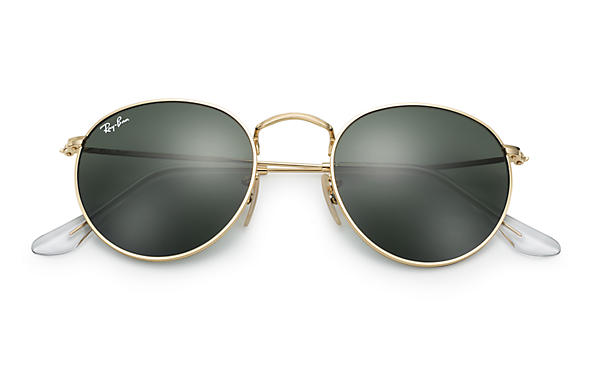
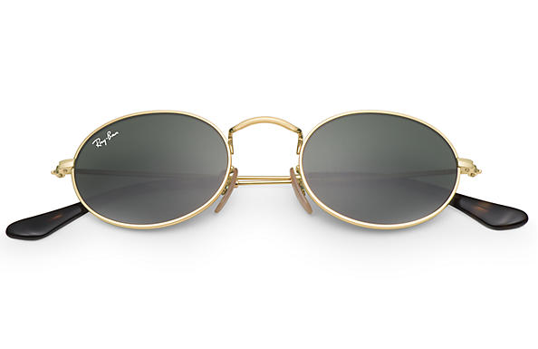
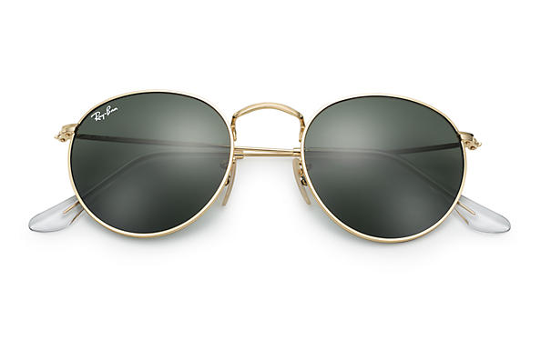
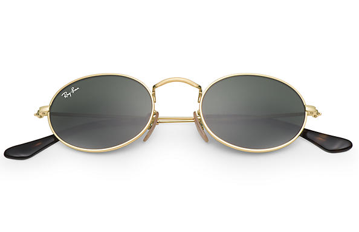

Gafas de Sol
Las gafas de sol tienen numerosos beneficios de salud y bienestar como proteger tus ojos de la radiación dañina y la luz ultravioleta. Como le ocurre a la mayoría de la gente, alguna vez habrás experimentado las quemaduras del sol en verano después de olvidar el protector solar.
 


